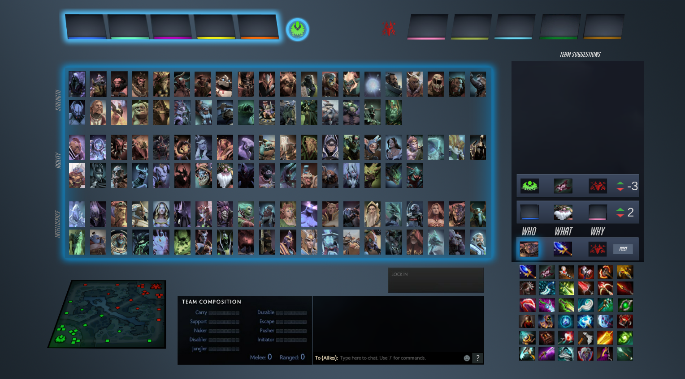
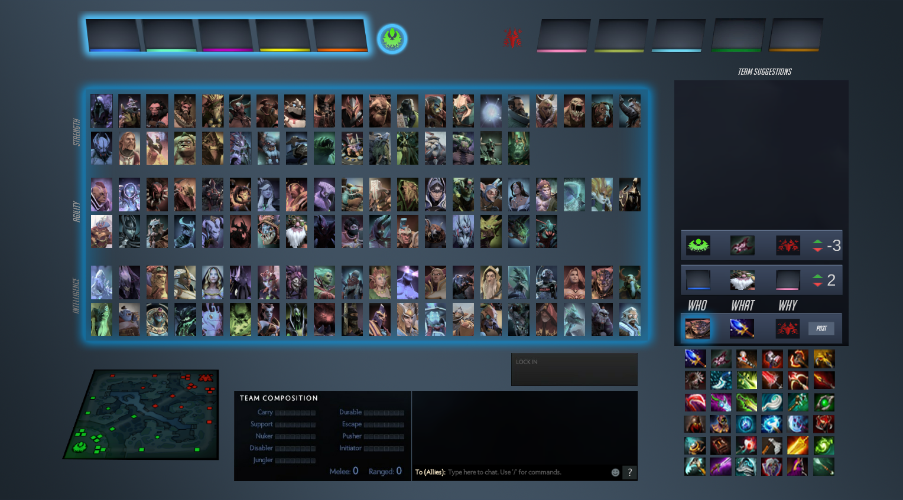

Projects
Interactive Pool schedule
This project was inspired by my experience working as a lifeguard. Schedules for the pool were displayed as a simple grid and people often had trouble understanding them, this lead to frustration among patrons. This design is meant to make it clearer what is scheduled at any time in the pool by using simple controls and a large display that mirrors the appearence of the pool.


DotA 2 Hero Selection Screen
This was a term project for the class Computer Science 481, Human Computer Interaction. The goal of our team was to add features to make hero selection in moba games a more socially positive expericence and redesign the interface. The redesigned interface gives players the ability to communicate strategies at an abstracted level meant to reduce toxic behavior and overcome language barriers.
 

Sol
I worked on the game Sol as an artist in the class Computer Science 406, Game Design Workshop, I was the main visual artist for the game. My main roles were to create 3D models and to direct the art style of the game. This game was my first experience working on 3D modeling and animation.


Hanabi Game Client
This project was done as a term project for Computer Science 370, Intermediate Software Engineering. I designed and implemented the user interface for the program, and was heavily involved in each step of the development of our software. This included writing requirements, designing the architecture, etc.
Artwork
Image Modal
In this example, we use CSS to create a modal (dialog box) that is hidden by default.
We use JavaScript to trigger the modal and to display the current image inside the modal when it is clicked on. Also note that we use the value from the image's "alt" attribute as an image caption text inside the modal.